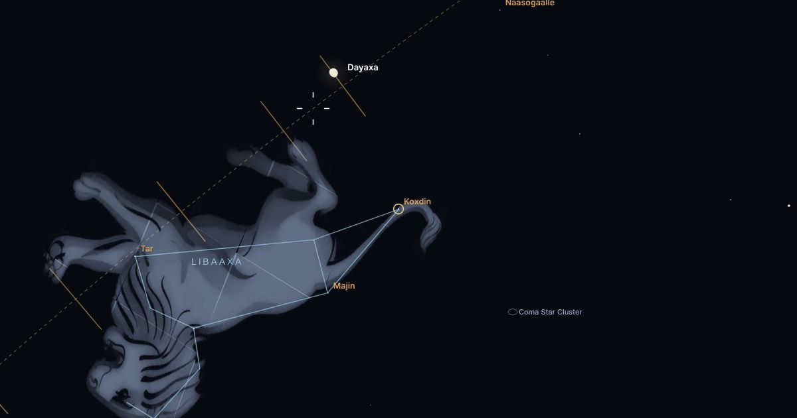
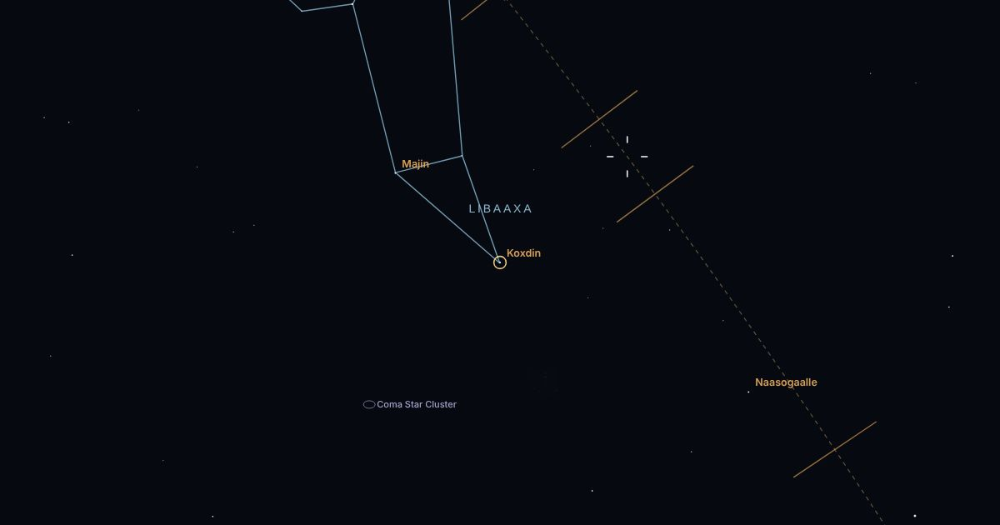

God 12aad · Naafaha
Koxdin
الصرفةMagacyo kale: Koxdin-nirgood
Koxdin waa godka 12aad ee 28-da god ee uu dayaxu habeen kasta mid dego. Waxa uu ka mid yahay kooxda Naafaha, oo ah godadka xilliga Xagaaga. Xiddigihiisa: Denebola (Koxdin-nirgood).


Lambarka12 / 28
KooxdaNaafaha (Xagaa)
Qorraxdu ku jirtaa13 cisho
Carabiالصرفة
Qorraxda iyo godka
Taariikhaha dhaqanka Soomaalida: qorraxdu Dirir waxay gashaa 10 Oktoobar, god kastana 13 cisho ayay fadhidaa, Tar mooyee oo ay 14 cisho fadhido.
- Qorraxdu godka waxay gashaa14 Sebtembar ilaa 26 Sebtembar
- Soo bixidda waaberiga10 Oktoobar
- Dhicidda fiidka1 Sebtembar
- Soo bixidda maqribka15 Maarso
Qormooyin
Qoraallada Cirday ee godkan ka hadla.